Introduction
Cet article décrit les calculs à réaliser pour vérifier des signatures RSA et ECDSA, dans le cas des certificats x509. Ces certificats sont les plus couramment utilisés et servent notamment à la sécurisation https.
-
RSA : ce cas sera traité avec le certificat d’un serveur https.
-
ECDSA : nous commencerons par travailler sur un certificat auto-signé que nous créerons pour l’occasion, afin de se familiariser avec les calculs qu’implique la cryptographie à courbes elliptiques. Pour finir nous récupérerons un certificat CEV (Certificat Électronique Visible). Ce dernier cas sort du cadre x509 qui est l’objet principal de cet article, le format pour un tel certificat étant 2D-Doc.
Au fil du document nous ferons appel aux outils suivants :
-
opensslpour travailler sur les certificats x509 en ligne de commande -
python,bcouzsbcpour faire des calculs avec des nombres entiers de grande taille -
Conversion entre encodage PEM et encodage binaire (Linux :
base64, Windows :notepad++) -
Édition du contenu de fichier binaire (Linux :
gvim/xxd, Windows :notepad++)
|
Note
|
Windows versus Unix/Linux
Ce document s’adresse aux utilisateurs de Windows et Linux. Il arrive qu’entre les deux environnements l’outil "naturel" pour effectuer une certaine tâche diffère, dans ce cas les outils des deux systèmes sont présentés. |
Plan :
-
Le format x509
-
Outillage pour manipuler le format x509
-
Cas d’un certificat RSA
-
Cas d’un certificat ECDSA
1. Le format x509
1.1 Visualisation d’un certificat x509
A l’aide d’un navigateur, ouvrir une page en https et afficher le certificat.
Exemple avec Firefox 44 et le site https://letsencrypt.org/. Dans la suite, nous continuerons avec le certificat de ce site.
-
Cliquer sur l’icône de cadenas à gauche de la barre d’adresse
-
Cliquer sur la flèche droite
-
Cliquer sur Plus d’informations
-
Cliquer sur Afficher le certificat
-
Afficher l’onglet Détails
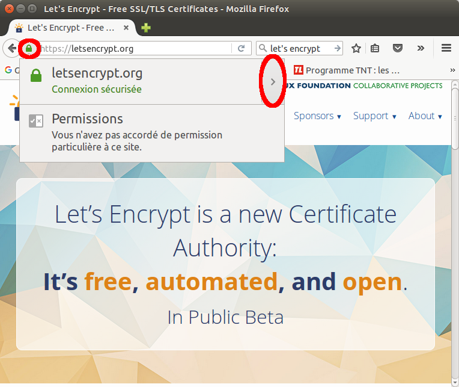 |
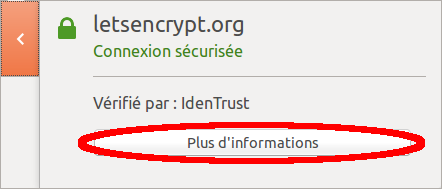 |
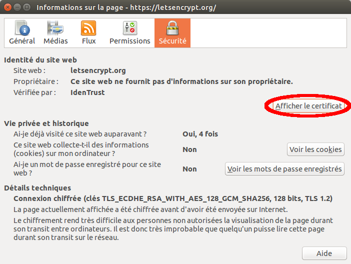 |
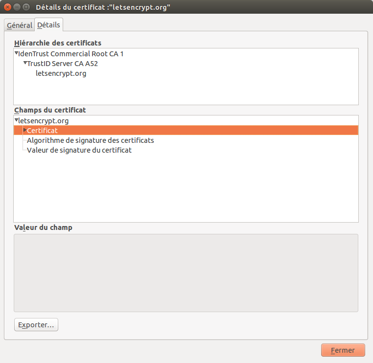 |
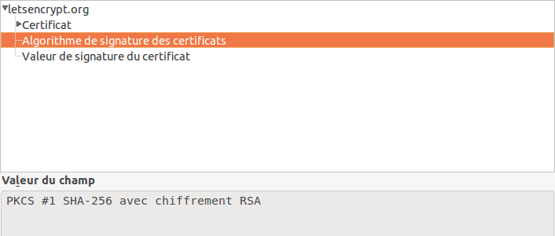 |
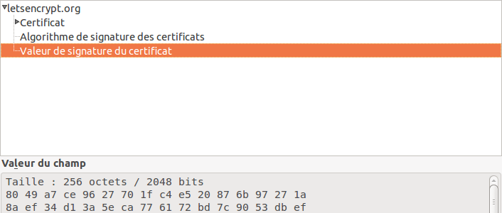 |
Nous nous intéresserons à la partie supérieure (Hiérarchie des certificats) plus tard.
Pour le moment examinons le certificat. L’affichage de Firefox en dessous de Champs du certificat liste trois parties :
-
Le certificat proprement dit, qui contient beaucoup d’informations structurées sur plusieurs niveaux hiérarchiques
-
L’algorithme de signature du certificat, dans notre exemple, PKCS #1 SHA-256 avec chiffrement RSA
-
La signature du certificat, ici, une suite de 256 octets
Cette structure en trois parties est toujours respectée pour un certificat x509. A noter qu’Internet Explorer affiche les mêmes informations, mais elles ne sont pas hiérarchisées en trois parties comme le fait Firefox.
1.2 Structure d’un certificat x509
Où la structure d’un certificat est-elle définie, et quelle est cette définition ?
Une recherche sur un moteur de recherche avec les mots-clés RFC et x509 produit l’URL suivante dans les premières réponses :
Et effectivement la RFC 5280 définit le format x509 version 3 en totalité.
|
Note
|
Un ou une RFC ?
Nous utiliserons le féminin dans ce document, en sachant que RFC étant un acronyme anglais, il n’y a pas d’argument définitif en faveur du masculin ou du féminin. |
Affichons la RFC 5280. Dans la section 4.1 se trouve la définition suivante :
...
4.1. Basic Certificate Fields
The X.509 v3 certificate basic syntax is as follows. For signature
calculation, the data that is to be signed is encoded using the ASN.1
distinguished encoding rules (DER) [X.690]. ASN.1 DER encoding is a
tag, length, value encoding system for each element.
Certificate ::= SEQUENCE {
tbsCertificate TBSCertificate,
signatureAlgorithm AlgorithmIdentifier,
signatureValue BIT STRING }
...
La suite définit les différents éléments du certificat, à savoir ce que sont les structures TBSCertificate et AlgorithmIdentifier.
|
Important
|
Grammaire, ASN.2 et DER
La structure du certificat est décrite par une grammaire, d’après les règles de syntaxe ASN.1. L’encodage de données dont la structure est décrite en ASN.1 est défini par la norme X.690. La RFC précise que la partie du certificat à signer doit être encodée selon le standard Distinguished Encoding Rules ou DER. Entre autres encodages, le document X.690 définit le DER. Nous verrons par la suite l’encodage DER. Si vous souhaitez l’aborder sans attendre, plutôt que d’examiner directement le document X.690, je vous recommande cette page : Présentation X.690 (Wikipédia) |
En ASN.1 le mot-clé SEQUENCE sans autre précision indique un bloc constitué d’une suite de sous-blocs de données. On a donc le bloc de données Certificate dans lequel se trouvent, à la suite :
-
Le bloc tbsCertificate, soit le certificat à signer (to be signed Certificate)
-
Le bloc signatureAlgorithm, soit l’identification de l’algorithme de signature
-
Le bloc signatureValue, soit la signature elle-même
1.3 Hiérarchie des certificats
Dans la partie tbsCertificate de letsencrypt.org, intéressons-nous à deux éléments en particulier, l'émetteur du certificat et le sujet du certificat.
-
Le sujet du certificat a pour CN (c’est le nom commun, CN pour Common Name) letsencrypt.org et c’est le dernier nom qui est affiché dans la hiérarchie des certificats (partie supérieure de la fenêtre).
-
L'émetteur du certificat a pour CN TrustID Server CA A52 et on peut voir ce nom au-dessus de letsencrypt.org dans la hiérarchie.
L’émetteur et le sujet ont également le pays (C) et l’organisation (O) définis dans leur nom, ainsi que d’autres éléments. Le "nom simple" ou "nom court" du certificat est son CN. Le standard x509 ne définit pas cette notion de "nom simple" ou "nom court", nous l’employons ici pour préciser que dans la pratique, le CN est le véritable nom du certificat, les autres éléments donnant des informations annexes. Parfois, seul le CN est affiché pour désigner un certificat.
Cela dit, le nom du certificat (au sens du standard x509) est constitué de la totlité des éléments qui le composent, et non pas seulement du CN.
Sujet |
Émetteur |
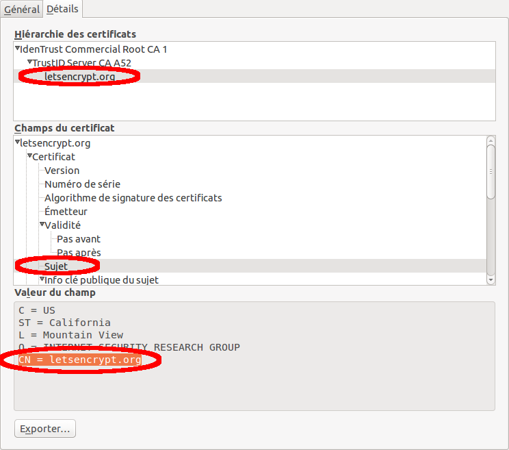 |
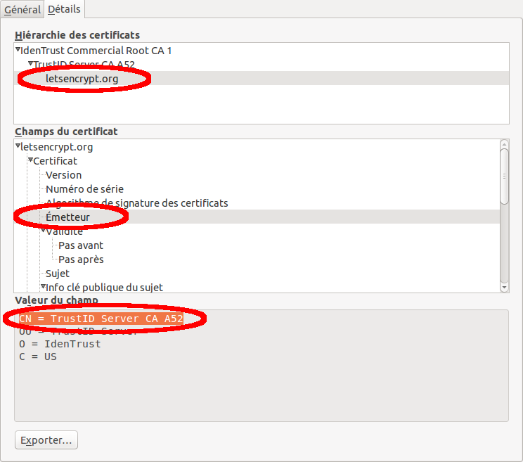 |
Le lien hiérarchique est toujours établi entre un émetteur et un sujet.
L’émetteur est celui qui signe le certificat, le sujet est celui qui est signé. Pour signer, l’émetteur utilise sa clé privée. La vérification de la signature est faite avec sa clé publique. Ainsi pour vérifier l’authenticité du certificat letsencrypt.org, nous aurons besoin de la clé publique de son émetteur, TrustID Server CA A52.
Ce principe est toujours respecté avec les certificats x509, que ce soit avec RSA ou d’autres systèmes à clé publique / clé privée.
Nous allons maintenant passer au cas du RSA.
2 Vérification de signature RSA
2.1 La signature RSA
Notations
-
Le certificat à signer (le sujet du certificat) est tbsCertificate, soit le certificat sans les informations de signature.
-
L’entité qui signe le certificat (l’émetteur du certificat) a pour clé RSA (n, e) (n est le modulo, e est l’exposant) et d. Le couple (n, e) est la clé publique, d est la clé privée.
La page Chiffrement RSA (Wikipédia) explique le lien entre (n, e) et d, et nous indique le calcul à effectuer pour chiffrer. Pour signer, le calcul inverse le rôle de l’exposant privé et public, et pour vérifier la signature, le rôle des exposants privé et public est encore inversé (par rapport à la signature).
Dans notre exemple le tbsCertificate est celui de letsencrypt.org, tandis que la clé RSA (clé publique (n, e) et clé privée d) est celle de TrustID Server CA A52.
Calcul de la signature
|
Note
|
Clé privée, clé publique
Le calcul de la signature nécessite de connaître d, la clé privée, que nous ne connaissons pas ici puisque le certificat émetteur (TrustID Server CA A52) ne nous appartient pas. Plus loin nous manipulerons des certificats auto-signés ce qui nous permettra de manipuler la clé privée. |
Vérification de la signature
-
Le vérificateur calcule \$M \equiv S^e ("mod " n)\$ [3]
-
Il calcule \$M'=hash("tbsCertificate")\$
-
Si on a l’égalité \$M=M'\$, la signature est vérifiée
2.2 Vérification du certificat de letsencrypto.org
Ce certificat est de type RSA et nous allons mettre en oeuvre les calculs présentés pour vérifier une signature de type RSA.
2.2.1 Choix d’un programme de calcul
Nous avons besoin d’une "calculatrice" qui calcule sur des nombres entiers arbitrairement grands, sans perte de précision. Dans la suite de ce document, c’est bc qui sera utilisé.
Page d’accueil de bc : bc
-
Linux : bc est disponible par défaut sur la plupart des distributions
-
Windows : les binaires sont accessibles ici : bc (Windows)
-
Attention sous windows bc a besoin du fichier readline5.dll pour s’exécuter. Vous pouvez le trouver ici. Conseil : téléchargez le zip contenant les binaires et copiez le fichier readline5.dll dans le répertoire où est situé bc.exe.
-
|
Note
|
Le choix de bc
|
|
Note
|
Alternatives à bc
|
| bc | python |
|---|---|
Saisie d’un entier en hexadécimal |
|
Exécuter au préalable
Exemple :
|
Saisir l’entier précédé de 0x Exemple :
|
Affichage d’entier en hexadécimal |
|
Exécuter au préalable
Exemple :
|
Interpoler avec %x Exemple :
|
2.2.2 Enregistrement de la signature sous forme d’entier
Depuis le navigateur, afficher la signature du certificat de letsencrypt.org, la sélectionner et la copier-coller dans un éditeur de texte, ensuite supprimer les caractère surnuméraires (enlever les ':' et les sauts de ligne), et passer les caractères hexadécimaux en majuscule [8]. Ajouter s= devant le nombre, et ajouter une première ligne ibase = 2 * 8. Enregistrer dans val.b.
L’instruction ibase = 2 * 8 ordonne à bc de lire les nombres en hexadécimal. ibase = 16 fonctionne aussi, à condition qu’ibase soit égal à 10 (valeur par défaut) au moment d’exécuter ibase = 16. Si ibase est déjà égal à 16 et que l’on exécute ibase = 16, une erreur se produit car bc lit 16 en hexadécimal (soit 22) et cette valeur est interdite.
Signature dans le navigateur |
Signature dans un éditeur de texte après transformation |
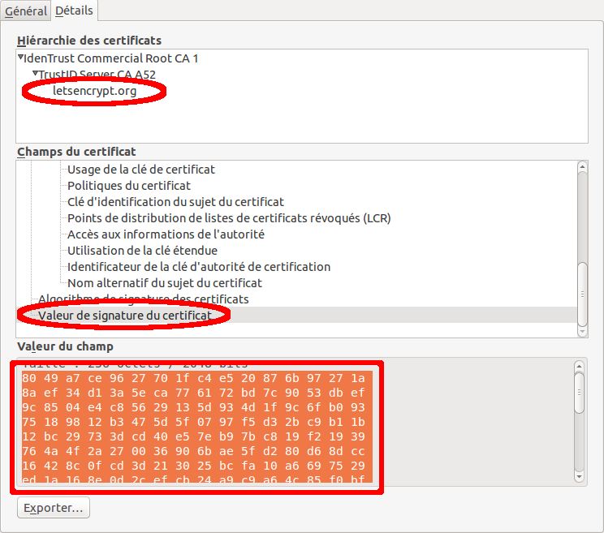 |
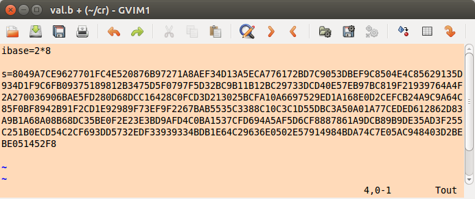 |
|
Important
|
Linux :
echo "obase=16; 65537" | bc 10001 Windows :
echo obase=16; 65537 | bc.exe 10001 |
2.2.3 Enregistrement de la clé publique sous forme d’entier
Depuis le navigateur, sélectionner le certificat de TrustID Server CA A52, afficher sa clé publique, la sélectionner et la copier-coller dans val.b. Il faut le faire en deux fois, une fois pour la clé de 256 octets (variable n) et une fois pour l’exposant (variable e).
Avec bc: ne pas oublier de passer les caractères hexadécimaux en majuscule.
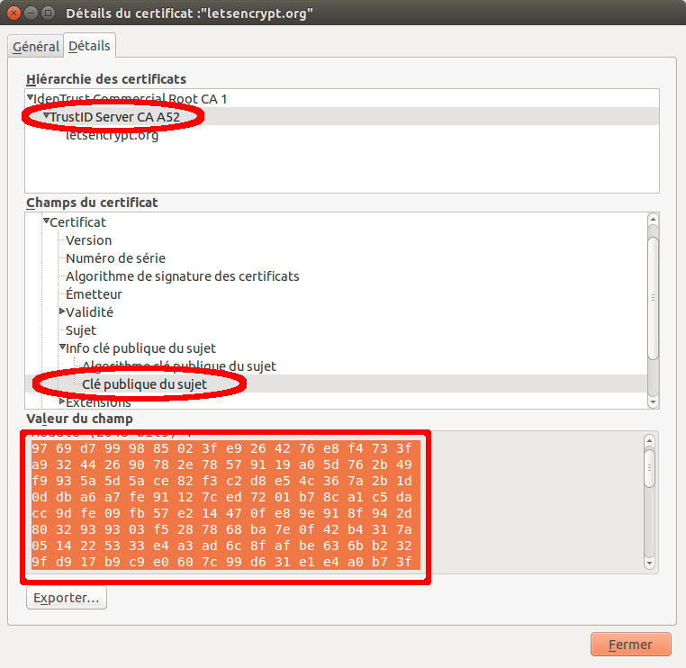
A l’arrivée, val.b contient trois variables, s, n et e.
ibase=2*8 s=8049A7CE9627701FC4E520876B97271A8AEF34D13A5ECA776172BD7C9053DBEF9C8504E4C85629135D934D1F9C6FB09375189812B3475D5F0797F5D32BC9B11B12BC29733DCD40E57EB97BC819F21939764A4F2A270036906BAE5FD280D68DCC16428C0FCD3D213025BCFA10A6697529ED1A168E0D2CEFCB24A9C9A64C85F0BF8942B91F2CD1E92989F73EF9F2267BAB5535C3388C10C3C1D55DBC3A50A01A77CEDED612862D83A9B1A68A08B68DC35BE0F2E23E3BD9AFD4C0BA1537CFD694A5AF5D6CF8887861A9DCB89B9DE35AD3F255C251B0ECD54C2CF693DD5732EDF33939334BDB1E64C29636E0502E57914984BDA74C7E05AC948403D2BEBE051452F8 n=9769D7999885023FE9264276E8F4733FA932442690782E78579119A05D762B49F9935A5D5ACE82F3C2D8E54C367A2B1D0DDBA6A7FE91127CED7201B78CA1C5DACC9DFE09FB57E214470FE89E918F942D8032939303F5287868BA7E0F42B4317A0514225333E4A3AD6C8FAFBE636BB2329FD917B9C9E0607C99D631E1E4A0B73FAFB232AC7E8C9CDC02EBE1BC1F149CBC91F7B2FB42F3E1202BCBBF8FF3B37063FAF7752802ABC5D4B0EDEA257F87CD371496833C40021BA09E19477FF3B0CCC52560B83512F151EB17DCFC5BA5D99BEF404CD77771E9FB458B7EF2E369B042661746903ACD463DF1B0096FDCFFEE3361CAFCC72E3CED5E0AD1BF221269804B23 e=10001
2.2.4 La fonction powmod
Les amateurs de python ont encore un avantage à ce stade. L’équivalent de la fonction powmod y est disponible sous forme d’un troisième paramètre (facultatif) à la fonction pow.
Pour ceux qui utilisent bc comme moi, il faut écrire la fonction.
La fonction powmod met en oeuvre l’algorithme d’exponentiation rapide, décrit ici : Exponentiation rapide (Wikipédia). En fait nous sommes dans un contexte modulaire et d’après Wikipédia le nom exact de l’algorithme est exponentiation modulaire, une page spécifique y étant consacrée : Exponentiation modulaire (Wikipédia). Les deux algorithmes font appel au même principe, mais le second exploite le contexte modulaire pour que les nombres manipulés n’atteignent pas une taille démesurée. C’est le second algorithme (exponentiation modulaire) dont nous avons besoin pour la suite.
Sur Internet, on peut trouver la fonction powmod dans de nombreux scripts bc à télécharger. À noter qu’elle porte parfois d’autres noms, mpower en particulier.
define powmod(a, b, c) {
auto p, r
p = a
r = 1
while (b > 0) {
if (b % 2) r = (r * p) % c
p = (p * p) % c
b /= 2
}
return r
}
2.2.5 Calcul de M
Nous voilà prêts pour calculer M.
Lancer bc [9] avec en paramètres powmod.b et val.b, définir obase à 2 * 8 [5] (pour que les nombres soient affichés en hexadécimal) et exécuter la fonction powmod. Rappelons que c’est S (variable s) qui doit être élevé à la puissance e, modulo n. Attention lors de la définition d’obase, ibase vaut 16 (résultat du script val.b chargé au démarrage) donc obase=16 ne fonctionnera pas.
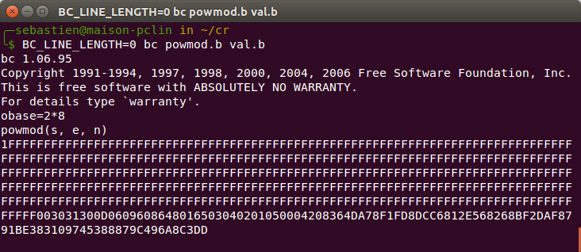
|
Important
|
Au démarrage de bc, ibase est égal à 16 du fait du chargement de val.b. Si vous exécutez obase = 16, obase sera égal à… 22 ! C’est logique, puisque 16 est saisi en hexadécimal. Le plus simple est d’utiliser 2 * 8 comme indiqué. Vous pouvez aussi exécuter obase = 10 (ibase étant égal à 16), mais c’est moins clair, et vous devez être certain qu’ibase vaut bien 16 au moment d’exécuter obase = 10, pour passer l’affichage des nombres en hexadécimal (2 * 8 fonctionne toujours quelle que soit la valeur d’ibase, y compris pour les valeurs inférieures ou égales à 4). |
Le résultat avec tous ces F prouve avec une quasi certitude que le calcul s’est bien passé. Les F correspondent au 'padding' standard effectué pour une signature RSA, la valeur qui suit l’octet nul est le hash. Attention il ne s’agit pas exactement de la valeur de M présentée ci-dessus, il s’agit du codage du hash en DER. dans la partie suivante nous allons analyser ce contenu.
2.2.6 Analyse de M
Nous allons procéder en trois étapes :
-
Enregistrement du contenu hexadécimal
-
Conversion du contenu hexadécimal en binaire
-
Examen du contenu binaire avec la commande openssl asn1parse
1 Enregistrement du contenu hexadécimal
Faisons un copier-coller de M (en hexadécimal) à partir de l’octet qui suit l’octet nul, et enregistrons le résultat dans le fichier m.hex.
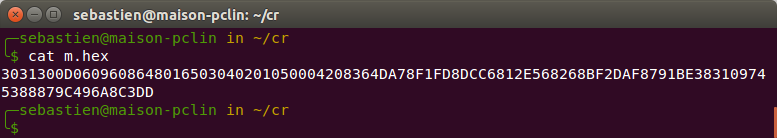
3031300D0609608648016503040201050004208364DA78F1FD8DCC6812E568268BF2DAF8791BE383109745388879C496A8C3DD
2 Conversion du contenu hexadécimal en binaire
Il nous faut maintenant convertir m.hex en binaire, puisque le contenu actuel est le codage des octets en hexadécimal de la signature, ce n’est pas la signature elle-même.
Exécuter
xxd -r -p m.hex > m.der
Le plus simple est d’utiliser notepad++ et d’enregistrer le fichier transformé avec le nom m.der.
Avant
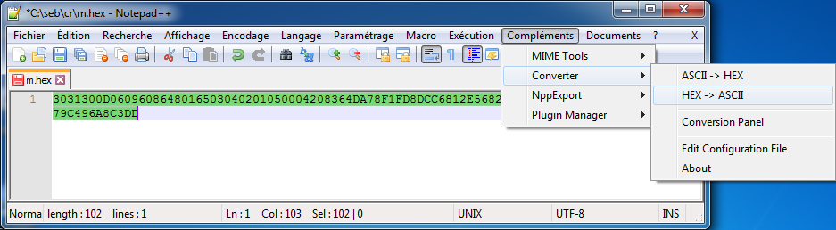
Après (on a enregistré le nouveau contenu avec le nouveau nom m.der)
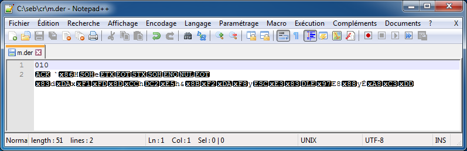
Le fichier m.der contient les octets que l’on avait dans la signature, ce que l’on peut vérifier facilement…
-
… sous Linux avec la commande hd (on peut aussi utiliser hexdump ou xxd).
-
… sous Windows le plus simple est d’utiliser notepad++ et reconvertir en hexadécimal pour vérifier que l’on retombe sur ses pieds. Sinon on peut s’installer un freeware d’affichage ou d’édition de fichier en binaire.
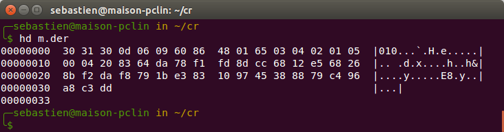
3 Examen du contenu binaire avec la commande openssl asn1parse
Exécuter la commande openssl asn1parse -inform der -in m.der
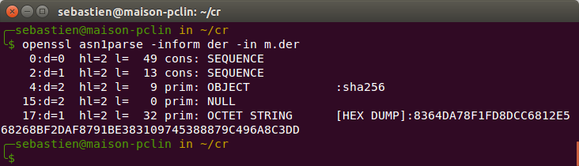
openssl nous donne deux informations :
-
L’algorithme de hachage est SHA-256, ce que l’on savait déjà d’après le contenu de signatureAlgorithm (deuxième bloc de données du certificat)
-
openssl affiche la valeur du hachage (bloc prim: OCTET STRING) sous forme hexadécimale
Nous savons désormais que la signature SHA-256 du bloc de données tbsCertificate du certificat de letsencrypt.org devrait être :
8364DA78F1FD8DCC6812E568268BF2DAF8791BE383109745388879C496A8C3DD
C’est ce que nous allons vérifier en calculant maintenant M'.